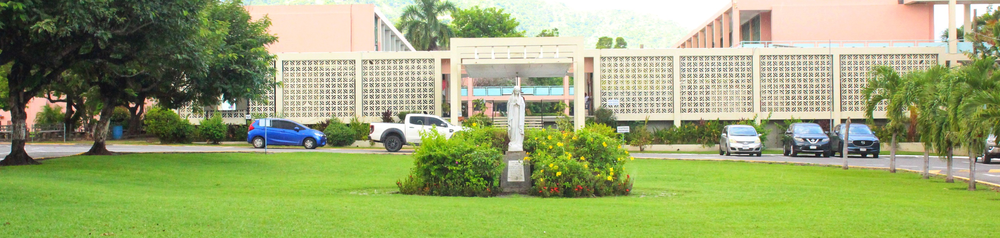

Welcome to Immaculate Conception High School
Welcome to the Immaculate Conception High School Portal. Explore our website to learn more about our school.

Welcome to the Immaculate Conception High School Portal. Explore our website to learn more about our school.
